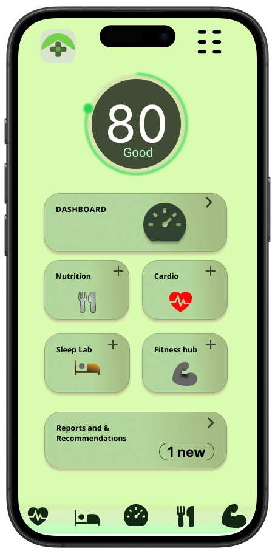
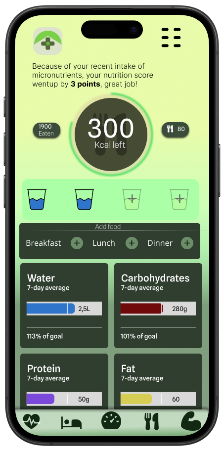

Projektbeschreibung
Heame basiert auf der Idee, Gesundheitsdaten einfach und bedeutsam zu machen. Statt Nutzer:innen mit verstreuten Zahlen und Diagrammen zu konfrontieren, werden alle verfügbaren Gesundheitsinformationen zu einem einzigen, leicht verständlichen Score verdichtet. Dieses Designkonzept liefert nicht nur unmittelbares Feedback, sondern hilft Nutzer:innen auch schnell zu verstehen, wie ihre verschiedenen Gesundheitswerte zusammenhängen und zum allgemeinen Wohlbefinden beitragen. Indem Heame Komplexität in Klarheit verwandelt, befähigt es Nutzer:innen, ihren Fortschritt zu verfolgen und auf ihrem Gesundheitsweg motiviert zu bleiben.
Hintergrund
Umfang der Arbeit: Designsystem, User-Interface-Design für eine Mobile App.
In der heutigen digitalen Gesundheitslandschaft bleiben die meisten Apps in ihrem Umfang begrenzt. Plattformen wie Apple Health oder Google Fit sind hervorragend darin, riesige Mengen an Gesundheitsdaten zu sammeln, präsentieren sie jedoch oft rein deskriptiv. Nutzer:innen sehen Zahlen, Diagramme und Kennwerte, stehen aber vor der Herausforderung, zu interpretieren, was das alles für ihr Wohlbefinden bedeutet. Andere Anbieter grenzen ihren Fokus sogar noch weiter ein und bieten ausgefeilte Oberflächen für Kalorienzählen, Laufen oder Schlafüberwachung - ohne das große Ganze zu adressieren.
Dadurch entsteht eine Lücke: Nutzer:innen sind von Strömen detaillierter Daten umgeben, ohne eine einfache, einheitliche Möglichkeit zu haben, zu verstehen, wie all diese Kennwerte zusammenhängen. Es gibt derzeit keine Lösung, die vielfältige Gesundheitsinformationen in einem einzigen, intuitiven Rahmen zusammenführt. Genau diese Chance greift Heame auf - indem es fragmentierte Daten in einen zugänglichen Score übersetzt, macht es persönliche Gesundheit sofort verständlich und handlungsleitend.
Ich habe mich entschieden, mich auf vier zentrale Gesundheitsbereiche zu konzentrieren, um einen dynamischen Score zu erstellen:
Warum genau diese?
Ich habe zwei zentrale Variablen identifiziert, die bei der Entwicklung einer Health-Tracking-App betrachtet werden müssen: Datenzugänglichkeit - wie leicht Nutzer:innen die Daten erfassen oder einbinden können - und Relevanz - ist dieser Wert ein guter Prädiktor für langfristige Gesundheit?
Bei der Gestaltung von Heame stand ich vor einer wichtigen Designentscheidung: Bei so vielen möglichen Gesundheitskennwerten - welche davon sind für Menschen tatsächlich relevant? Moderne Wearables können alles von Herzratenvariabilität bis Sauerstoffsättigung erfassen, aber zu viel auf einmal zu zeigen, überfordert Nutzer:innen eher, als dass es hilft.
Deshalb habe ich mich auf vier Kernparameter konzentriert: Herz-Kreislauf-Fitness, Schlaf, Training und Ernährung. Diese lassen sich nicht nur mit heutigen Geräten leicht erfassen, sondern gelten auch nachweislich als einer der größten Treiber langfristiger Gesundheit¹. Sie funktionieren wie die Eckteile eines Puzzles - sind sie erst einmal gesetzt, ergibt das große Ganze Sinn.
Indem Heame das Erlebnis um diese Grundpfeiler herum aufbaut, filtert die App das Rauschen heraus und rückt das in den Fokus, was wirklich zählt und leicht messbar ist. Das Ergebnis ist ein klarer, motivierender Score, der Nutzer:innen hilft, ihre Gesundheit auf einen Blick zu verstehen und dranzubleiben.
Navigation & Struktur
Eine Tab-Leiste am unteren Rand (Cardio, Schlaf, Dashboard, Ernährung, Training) hält die Navigation über die gesamte App hinweg konsistent - dieselben vier Bereiche wie im Schnellzugriffs-Raster auf dem Startbildschirm. Der ausführlichere Tagesüberblick zeigt den Score im Kontext von vier Mini-Werten sowie eine Kennzahlenleiste für Schritte, Schlaf, Kalorien und verbrannte Kalorien, darunter aufklappbare Widgets für Details wie VO2 Max, Herzratenvariabilität oder Makronährstoffe. Jeder der vier Bereiche folgt anschließend demselben Muster wie im Ernährungs-Screen: ein kurzer, personalisierter Kontext-Hinweis, das verbleibende Budget als Ring, und 7-Tage-Trends mit Zielfortschritt in Prozent - vom Wasserhaushalt über Kohlenhydrate bis zu Protein und Fett.


